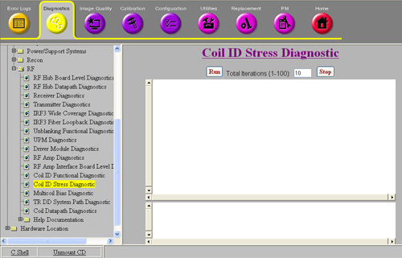

Proprietary to General Electric
Direction 5670000, Rev# 1
Optima MR450w 1.5T Service Methods
Module Version 3.0, Version Date 8/19/08
Proprietary to General Electric |
Diagnostics >> System Function >> RF >> Coil ID Stress Diagnostic
Diagnostics >> Hardware Location >> Magnet Room >> Coil ID Stress Diagnostic
Illustration 1: Coil ID Stress Diagnostic

This diagnostic tests the communication path for retrieving and displaying coil ID information. It is intended to be used to troubleshoot intermittent coil detection or ID problems.
RF Hub
RF Hub to LPCA Port A 37 pin cable
RF Hub to LPCA Port P1 and P2 25 pin cables
RF Hub to Table Port P3 and P4 25 pin cables
Coil connected to Port A, P1-P4
One or more coils plugged into the system.
Illustration 2: Coil ID Block Diagram

Navigate to Coil ID Stress Diagnostic.
To perform something other than the number of test iterations shown, enter a different value in the Total iterations (1-100) field.
Click [Run].
When the Coil ID Stress Diagnostic runs, the following operations are performed:
The SCP commands the RF Hub RFCB to re-read all coils connected.
The RFCB checks the coil present pins on the coil port cables (RFCB J1 – J4, J6).
For each coil port cable with the coil present pins shorted, the RFCB starts a 1-wire read of the coil ID information from the 1-wire coil ID chip(s) in the coil.
When the 1-wire operations complete, the RFCB sends the coil ID information to the SCP.
The SCP communicates to the Host to get the coil information from the coil database.
After all the coil connectors with a coil have been read, the sequence is run again until it reaches the number of iterations given.
After the Host responds with the coil information, or if the Host communication is down, the SCP displays the coil ID information to the diagnostic screen.
To be able to run the stress test, one or more coils must be detected. If no coils are detected, the diagnostic fails.
For each iteration, the stress test prints out the coil information read and error indications. Check the display for any differences in coil information between iterations. If any differences are noted between iterations, this could indicate an intermittent system problem.
Table 1: Diagnostic Results
| Result | Description | GE Field Action |
| RF Hub communication failure | The SCP cannot communicate to the RF Hub over the CAN link. | Run the RF Hub CAN Fiber Loopback diagnostic. |
| Coil ID read failure | The RF Hub reports a failure to read the coil ID information over the 1-wire line to the coil ID chip. |
|
| Body transmit enable mismatch; coil invalid | The body transmit enable state detected by the RFCB from the coil is different than expected. All coils except proton transmit coils are expected to have the body transmit enable pins shorted.. |
|
| Coil invalid failure | There is a problem with the information in the coil ID chip or coil database. | Check that the coil is installed in the coil database. |
| No coils detected with coils connected | The RF Hub is not reporting that a coil is connected. This means that the coil present lines are broken between the coil and the RFCB. |
|